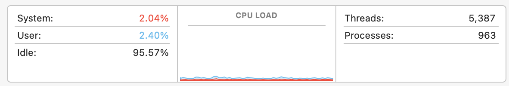
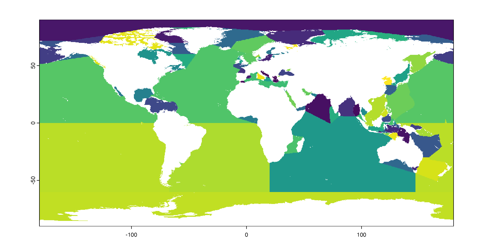

library(here) # manage file pathslibrary(socviz) # data and some useful functionslibrary(tidyverse) # your friend and mine## Magic new package# install.packages("furrr")library(furrr) # Also loads `future`
Loading required package: future
Split, Apply, Combine
A lot of analysis has this pattern
We start with a dataset
We split it into pieces, usually according to some feature or categorical variable, or by file or something.
We do something—the same thing—to each of those pieces. That is we apply a function or procedure to the pieces. That procedure returns some result for each piece. The result will be of the same form: a number, a vector of counts, summary statistics, a model, a list, whatever.
Finally we combine those results into a final piece of output, usually a tibble or somesuch.
For example
dplyr is all about this.
gss_sm |>count(bigregion)
# A tibble: 4 × 2
bigregion n
<fct> <int>
1 Northeast 488
2 Midwest 695
3 South 1052
4 West 632
We split into groups, apply the sum() function within the groups, and combine the results into a new tibble showing the resulting sum per group. The various dplyr functions are oriented to doing this in a way that gives you a consistent set of outputs.
For example: split
We can split, apply, combine in various ways.
Base R has the split() function:
out <- mtcars |>split(mtcars$cyl)summary(out) # mtcars split into a list of data frames by the `cyl` variable
Length Class Mode
4 11 data.frame list
6 11 data.frame list
8 11 data.frame list
In each of these cases, the data is processed sequentially or serially. R splits the data according to your instructions, applies the function or procedure to each one in turn, and combines the outputs in order out the other side. Your computer’s processor is handed each piece in turn.
How this happens
For small tasks that’s fine. But for bigger tasks it gets inefficient quickly.
## From Henrik Bengtsson's documentation for future/furrrslow_sum <-function(x) { sum <-0for (value in x) {Sys.sleep(1.0) ## one-second slowdown per value sum <- sum + value } sum}# This takes > ten seconds to run.tictoc::tic()slow_sum(1:10)
[1] 55
tictoc::toc()
10.052 sec elapsed
If this is the sort of task we have to apply to a bunch of things, it’s going to take ages.
That’s Embarrassing
A feature of many split-apply-combine activities is that it does not matter what order the “apply” part happens to the groups. All that matters is that we can combine the results at the end, no matter what order they come back in. E.g. in the mtcars example the model being fit to the 4-cylinder cars group doesn’t depend in any way on the results of the model being fit to the 8-cylinder group.
This sort of situation is embarrassingly parallel.
That’s Embarrassing
When a task is embarrassingly parallel, and the number of pieces or groups is large enough or complex enough, then if we can do them at the same time then we should. There is some overhead—we have to keep track of where each piece was sent and when the results come back in—but if that’s low enough in comparison to doing things serially, then we should parallelize the task.
Multicore Computing
Parallel computing used to mean “I have a cluster of computers at my disposal”. But modern CPUs are constructed in a semi-modular fashion. They have some number of “cores”, each one of which is like a small processor in its own right. In effect you have a computer cluster already.
Some Terms
Socket: The physical connection on your computer that houses the processor. These days, mostly there’s just one.
Core: The part of the processor that actually performs the computation. Most modern processors have multiple cores. Each one can do wholly independent work.
Process: A single instance of a running task or program (R, Slack, Chrome, etc). A core can only run one process at a time. But, cores are fast. And so, they can run many threads
Thread: A piece of a process that can share memory and resources with other threads. If you have enough power you can do something Intel called hyperthreading, which is a way of dividing up a physical core into (usually) two logical cores that work on the same clock cycle and share some resources on the physical core.
Cluster: A collection of things that are capable of hosting cores. Might be a single socket (on your laptop) or an old-fashioned room full of many physical computers that can be made to act as if they were a single machine.
Multicore Computing
Most of the time, even when we are using them, our computers sit around doing PRETTY MUCH NOTHING.

## How many cores do we have?parallelly::availableCores()
system
16
Remember, processor clock cycles are really fast. They’re measured in billions of cycles per second.
We need to put those cores to work!
Previously: Future and furrr
future and furrr made parallel computing way more straightforward than it used to be. In particular, for Tidyverse-centric workflows, furrr provides a set of future_ functions that are drop-in replacements for map and friends. So map() becomes future_map() and so on.
However, purrr has recently added support for parallelization via the in_parallel() function. It uses crate and mirai under the hood.
Parallel purrr
Update your R packages with remotes::update_packages().
library(tidyverse)library(here)# Set up parallel processinglibrary(mirai)status()
$connections
[1] 0
$daemons
[1] 0
# Summon daemons. Do not summon more daemons than you have cores. People often choose one less than the number of cores.daemons(15)status()
# Another slow function (from# Grant McDermott this time)slow_square <-function(x =1) { x_sq <- x^2## We explicitly namespace all our package function calls out <- tibble::tibble(value = x, value_sq = x_sq)Sys.sleep(2) # Zzzz out}tictoc::tic("Serially")## This is of course way slower than just writing## slow_square(1:20) but nvm that for nowserial_out <-map(1:20, slow_square) |>list_rbind()tictoc::toc()
If you use in_parallel() but don’t set daemons(), then the map will just proceed sequentially, as if in_parallel() were not there.
You have to explicitly pass through the names of any local functions you’re using, as well as any local objects. This can make the code a little more verbose, but with more complex jobs it’s clear what’s being passed in and from where.
If you have written a local function and are passing that along, you must make sure any package functions it calls are fully namespaced (e.g. tibble::tibble() rather than just tibble()).
Using in_parallel()
E.g. From the help:
# ❌ This won't work - external dependencies not declaredmy_data <-c(1, 2, 3)map(1:3, in_parallel(\(x) mean(my_data)))# ✅ This works - dependencies explicitly providedmy_data <-c(1, 2, 3)map(1:3, in_parallel(\(x) mean(my_data), my_data = my_data))# ✅ Package functions need explicit namespacingmap(1:3, in_parallel(\(x) vctrs::vec_init(integer(), x)))# ✅ Or load packages within the functionmap(1:3,in_parallel(\(x) {library(vctrs)vec_init(integer(), x) })
#' Get a year-month folder of NCDF Files from NOAA#'#' @param url The endpoint URL of the AVHRR data, <https://www.ncei.noaa.gov/data/sea-surface-temperature-optimum-interpolation/v2.1/access/avhrr/>#' @param local A local file path for the raw data folders, i.e. where all the year-month dirs go. Defaults to a local version under raw/ of the same path as the NOAA website.#' @param subdir The subdirectory of monthly data to get. A character string of digits, of the form "YYYYMM". No default. Gets appended to `local`#'#' @return A directory of NCDF files.#' @export#'#'get_nc_files <-function(url ="https://www.ncei.noaa.gov/data/sea-surface-temperature-optimum-interpolation/v2.1/access/avhrr/",local = here::here("raw/www.ncei.noaa.gov/data/sea-surface-temperature-optimum-interpolation/v2.1/access/avhrr/" ), subdir) { localdir <- here::here(local, subdir)if (!fs::dir_exists(localdir)) { fs::dir_create(localdir) } files <- rvest::read_html(paste0(url, subdir)) |> rvest::html_elements("a") |> rvest::html_text2() files <-subset(files, str_detect(files, "nc")) full_urls <-paste0(url, subdir, "/", files) full_outpaths <-paste0(localdir, "/", files)walk2(full_urls, full_outpaths, \(x, y) { httr::GET(x, httr::write_disk(y, overwrite =TRUE)) })}
NOAA Temperature Data
Initial get:
## Functions, incl. actual get_nc_files() function to get 1 year-month's batch of files.source(here("R", "functions.R"))### Initial get. Only have to do this once.## We try to be nice.# Data collection starts in September 1981first_yr <-paste0("1981", sprintf('%0.2d', 9:12))yrs <-1982:2024months <-sprintf('%0.2d', 1:12)subdirs <-c(first_yr, paste0(rep(yrs, each =12), months))slowly_get_nc_files <-slowly(get_nc_files)walk(subdirs, \(x) slowly_get_nc_files(subdir = x))
This tries to be polite with the NOAA: it enforces a wait time and in addition randomizes it to make it variably longer. There are a lot of files (>15,000). Doing it this way will take several days in real time (though much much less in actual transfer time of course).
## Seasons for plottingseason <-function(in_date){ br =yday(as.Date(c("2019-03-01","2019-06-01","2019-09-01","2019-12-01"))) x =yday(in_date) x =cut(x, breaks =c(0, br, 366))levels(x) =c("Winter", "Spring", "Summer", "Autumn", "Winter") x}season_lab <-tibble(yrday =yday(as.Date(c("2019-03-01","2019-06-01","2019-09-01","2019-12-01"))),lab =c("Spring", "Summer", "Autumn", "Winter"))
NOAA Temperature Data
Raw data files
#install.packages("ncdf4")#install.packages("terra")library(terra)## For the filename processing## This one gives you an unknown number of chunks each with approx n elementschunk <-function(x, n) split(x, ceiling(seq_along(x)/n))## This one gives you n chunks each with an approx equal but unknown number of elementschunk2 <-function(x, n) split(x, cut(seq_along(x), n, labels =FALSE))## All the daily .nc files:all_fnames <-as.character(fs::dir_ls(here("avhrr"), recurse =TRUE, glob ="*.nc"))chunked_fnames <-chunk(all_fnames, 25)length(all_fnames)
[1] 16065
length(chunked_fnames)
[1] 643
NOAA Temperature Data
The data is in netCDF (Version 4) format. An interesting self-documenting format. Read one in with the netCDF reader.
tmp <- ncdf4::nc_open(all_fnames[10000])tmp
File /Users/kjhealy/Documents/courses/data_wrangling/avhrr/200901/oisst-avhrr-v02r01.20090120.nc (NC_FORMAT_NETCDF4):
4 variables (excluding dimension variables):
short anom[lon,lat,zlev,time] (Chunking: [1440,720,1,1]) (Compression: shuffle,level 4)
long_name: Daily sea surface temperature anomalies
_FillValue: -999
add_offset: 0
scale_factor: 0.00999999977648258
valid_min: -1200
valid_max: 1200
units: Celsius
short err[lon,lat,zlev,time] (Chunking: [1440,720,1,1]) (Compression: shuffle,level 4)
long_name: Estimated error standard deviation of analysed_sst
units: Celsius
_FillValue: -999
add_offset: 0
scale_factor: 0.00999999977648258
valid_min: 0
valid_max: 1000
short ice[lon,lat,zlev,time] (Chunking: [1440,720,1,1]) (Compression: shuffle,level 4)
long_name: Sea ice concentration
units: %
_FillValue: -999
add_offset: 0
scale_factor: 0.00999999977648258
valid_min: 0
valid_max: 100
short sst[lon,lat,zlev,time] (Chunking: [1440,720,1,1]) (Compression: shuffle,level 4)
long_name: Daily sea surface temperature
units: Celsius
_FillValue: -999
add_offset: 0
scale_factor: 0.00999999977648258
valid_min: -300
valid_max: 4500
4 dimensions:
time Size:1 *** is unlimited ***
long_name: Center time of the day
units: days since 1978-01-01 12:00:00
zlev Size:1
long_name: Sea surface height
units: meters
actual_range: 0, 0
positive: down
lat Size:720
long_name: Latitude
units: degrees_north
grids: Uniform grid from -89.875 to 89.875 by 0.25
lon Size:1440
long_name: Longitude
units: degrees_east
grids: Uniform grid from 0.125 to 359.875 by 0.25
38 global attributes:
title: NOAA/NCEI 1/4 Degree Daily Optimum Interpolation Sea Surface Temperature (OISST) Analysis, Version 2.1 - Final
Description: Reynolds, et al.(2007) Daily High-resolution Blended Analyses. Available at ftp://eclipse.ncdc.noaa.gov/pub/OI-daily/daily-sst.pdf Climatology is based on 1971-2000 OI.v2 SST, Satellite data: Navy NOAA18 METOP AVHRR, Ice data: NCEP ice
source: ICOADS, NCEP_GTS, GSFC_ICE, NCEP_ICE, Pathfinder_AVHRR, Navy_AVHRR
id: oisst-avhrr-v02r01.20090120.nc
naming_authority: gov.noaa.ncei
summary: NOAAs 1/4-degree Daily Optimum Interpolation Sea Surface Temperature (OISST) (sometimes referred to as Reynolds SST, which however also refers to earlier products at different resolution), currently available as version v02r01, is created by interpolating and extrapolating SST observations from different sources, resulting in a smoothed complete field. The sources of data are satellite (AVHRR) and in situ platforms (i.e., ships and buoys), and the specific datasets employed may change over time. At the marginal ice zone, sea ice concentrations are used to generate proxy SSTs. A preliminary version of this file is produced in near-real time (1-day latency), and then replaced with a final version after 2 weeks. Note that this is the AVHRR-ONLY DOISST, available from Oct 1981, but there is a companion DOISST product that includes microwave satellite data, available from June 2002
cdm_data_type: Grid
history: Final file created using preliminary as first guess, and 3 days of AVHRR data. Preliminary uses only 1 day of AVHRR data.
date_modified: 2020-05-08T19:05:13Z
date_created: 2020-05-08T19:05:13Z
product_version: Version v02r01
processing_level: NOAA Level 4
institution: NOAA/National Centers for Environmental Information
creator_url: https://www.ncei.noaa.gov/
creator_email: oisst-help@noaa.gov
keywords: Earth Science > Oceans > Ocean Temperature > Sea Surface Temperature
keywords_vocabulary: Global Change Master Directory (GCMD) Earth Science Keywords
platform: Ships, buoys, Argo floats, MetOp-A, MetOp-B
platform_vocabulary: Global Change Master Directory (GCMD) Platform Keywords
instrument: Earth Remote Sensing Instruments > Passive Remote Sensing > Spectrometers/Radiometers > Imaging Spectrometers/Radiometers > AVHRR > Advanced Very High Resolution Radiometer
instrument_vocabulary: Global Change Master Directory (GCMD) Instrument Keywords
standard_name_vocabulary: CF Standard Name Table (v40, 25 January 2017)
geospatial_lat_min: -90
geospatial_lat_max: 90
geospatial_lon_min: 0
geospatial_lon_max: 360
geospatial_lat_units: degrees_north
geospatial_lat_resolution: 0.25
geospatial_lon_units: degrees_east
geospatial_lon_resolution: 0.25
time_coverage_start: 2009-01-20T00:00:00Z
time_coverage_end: 2009-01-20T23:59:59Z
metadata_link: https://doi.org/10.25921/RE9P-PT57
ncei_template_version: NCEI_NetCDF_Grid_Template_v2.0
comment: Data was converted from NetCDF-3 to NetCDF-4 format with metadata updates in November 2017.
sensor: Thermometer, AVHRR
Conventions: CF-1.6, ACDD-1.3
references: Reynolds, et al.(2007) Daily High-Resolution-Blended Analyses for Sea Surface Temperature (available at https://doi.org/10.1175/2007JCLI1824.1). Banzon, et al.(2016) A long-term record of blended satellite and in situ sea-surface temperature for climate monitoring, modeling and environmental studies (available at https://doi.org/10.5194/essd-8-165-2016). Huang et al. (2020) Improvements of the Daily Optimum Interpolation Sea Surface Temperature (DOISST) Version v02r01, submitted.Climatology is based on 1971-2000 OI.v2 SST. Satellite data: Pathfinder AVHRR SST and Navy AVHRR SST. Ice data: NCEP Ice and GSFC Ice.
NOAA Temperature Data
We use the terra package, which understands many GIS formats. Each day is a grid or raster of data that’s 1440 x 720 in size. It has several layers, each one a specific measure—sea-surface temperature, sea ice, etc.
Terra can understand rasters aggregated into slabs or “bricks” covering the same area repeatedly, and has methods for aggregating these arrays in different ways.
NOAA Temperature Data
Read one in with terra. Get the sst (Sea Surface Temperature) layer only.
Write a function to get a file, read in the SST raster, and get its area-weighted mean, for the North Atlantic region only.
#' Process NCDF temperature rasters#'#' Use terra to process a temperature NCDF file#'#' @param fnames#' @param crop_area#' @param layerinfo#'#' @returns#' @export#'#' @examplesprocess_raster <-function( fnames,crop_area =c(-80, 0, 0, 60),layerinfo =NULL) { nc_layerinfo <- tibble::tibble(num =c(1:4),raw_name =c("anom_zlev=0", "err_zlev=0", "ice_zlev=0", "sst_zlev=0"),name =c("anom", "err", "ice", "sst") )if (!is.null(layerinfo)) { nc_layerinfo <- layerinfo } tdf <- terra::rast(fnames) |> terra::rotate() |># Convert 0 to 360 lon to -180 to +180 lon terra::crop(crop_area) # Manually crop to a defined box. Default is roughly N. Atlantic lat/lon box wts <- terra::cellSize(tdf, unit ="km") # For scaling# global() calculates a quantity for the whole grid on a particular SpatRaster# so we get one weighted mean per file that comes in out <-data.frame(date = terra::time(tdf),means = terra::global(tdf, "mean", weights = wts, na.rm =TRUE) ) out$var <-rownames(out) out$var <-gsub("_.*", "", out$var) out <-reshape(out, idvar ="date", timevar ="var", direction ="wide")colnames(out) <-gsub("weighted_mean\\.", "", colnames(out)) out}
# All the seas with rasterize() and zonal()# Seas of the world polygons from https://www.marineregions.org/downloads.php,# IHO Sea Areas V3 shapefile.seas <- sf::read_sf(here("seas"))seas
## Rasterize the seas polygons using one of the nc files## as a reference grid for the rasterization processone_raster <- all_fnames[1]seas_vect <- terra::vect(seas)tmp_tdf_seas <- terra::rast(one_raster)["sst"] |>rotate()seas_zonal <-rasterize(seas_vect, tmp_tdf_seas, "NAME")
NOAA Temperature Data
plot(seas_zonal, legend =FALSE)

Pointers and wrapping
We’ll need to apply this grid of seas and oceans repeatedly — once for each .nc file — which means it has to get passed to all our worker cores. But it is stored as a pointer, so we can’t do that directly. We need to wrap it:
# If we don't do this it can't be passed around# across the processes that in_parallel() will spawnseas_zonal_wrapped <- terra::wrap(seas_zonal)
NOAA Temperature Data
Write a function very similar to the other one.
#' Process raster zonally#'#' Use terra to process the NCDF files#'#' @param fnames Vector of filenames#' @param wrapped_seas wrapped object containing rasterized seas data#'#' @returns#' @export#'#' @examplesprocess_raster_zonal <-function(fnames, wrapped_seas = seas_zonal_wrapped) { d <- terra::rast(fnames) wts <- terra::cellSize(d, unit ="km") # For scaling layer_varnames <- terra::varnames(d) # vector of layers date_seq <-rep(terra::time(d)) # vector of dates# New colnames for use post zonal calculation below new_colnames <-c("sea", paste(layer_varnames, date_seq, sep ="_"))# Better colnames tdf_seas <- d |> terra::rotate() |># Convert 0 to 360 lon to -180 to +180 lon terra::zonal(terra::unwrap(wrapped_seas), mean, na.rm =TRUE)colnames(tdf_seas) <- new_colnames# Reshape to long tdf_seas |> tidyr::pivot_longer(-sea,names_to =c("measure", "date"),values_to ="value",names_pattern ="(.*)_(.*)" ) |> tidyr::pivot_wider(names_from = measure, values_from = value)}
NOAA Temperature Data
Try it on one record:
process_raster_zonal(all_fnames[10000])
# A tibble: 101 × 6
sea date anom err ice sst
<chr> <chr> <dbl> <dbl> <dbl> <dbl>
1 Adriatic Sea 2009-01-20 0.174 0.227 NaN 13.5
2 Aegean Sea 2009-01-20 0.796 0.146 NaN 15.9
3 Alboran Sea 2009-01-20 -0.692 0.168 NaN 14.8
4 Andaman or Burma Sea 2009-01-20 -0.548 0.124 NaN 27.1
5 Arabian Sea 2009-01-20 0.267 0.133 NaN 26.6
6 Arafura Sea 2009-01-20 0.112 0.293 NaN 29.6
7 Arctic Ocean 2009-01-20 0.0366 0.298 0.979 -1.74
8 Baffin Bay 2009-01-20 0.130 0.279 0.953 -1.58
9 Balearic (Iberian Sea) 2009-01-20 0.0595 0.130 NaN 14.0
10 Bali Sea 2009-01-20 -0.134 0.138 NaN 28.7
# ℹ 91 more rows
We’ll tidy the date later. You can see we get 101 summary records per day.
NOAA Temperature Data
Try it on one chunk of records:
process_raster_zonal(chunked_fnames[[1]])
# A tibble: 2,525 × 6
sea date anom err ice sst
<chr> <chr> <dbl> <dbl> <dbl> <dbl>
1 Adriatic Sea 1981-09-01 -0.737 0.167 NaN 23.0
2 Adriatic Sea 1981-09-02 -0.645 0.176 NaN 23.1
3 Adriatic Sea 1981-09-03 -0.698 0.176 NaN 22.9
4 Adriatic Sea 1981-09-04 -0.708 0.248 NaN 22.9
5 Adriatic Sea 1981-09-05 -1.05 0.189 NaN 22.5
6 Adriatic Sea 1981-09-06 -1.02 0.147 NaN 22.4
7 Adriatic Sea 1981-09-07 -0.920 0.141 NaN 22.4
8 Adriatic Sea 1981-09-08 -0.832 0.140 NaN 22.5
9 Adriatic Sea 1981-09-09 -0.665 0.162 NaN 22.6
10 Adriatic Sea 1981-09-10 -0.637 0.268 NaN 22.5
# ℹ 2,515 more rows